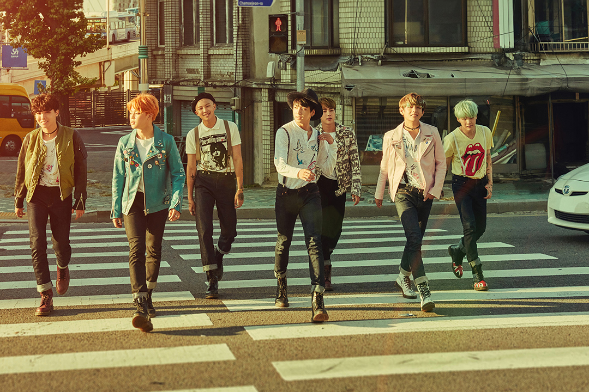
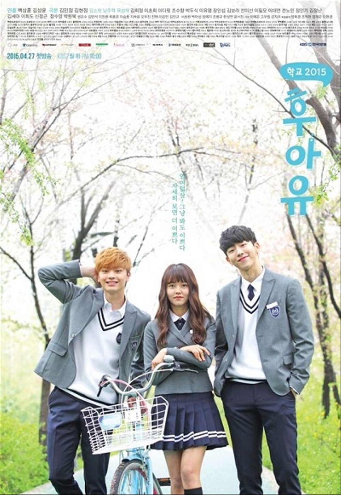
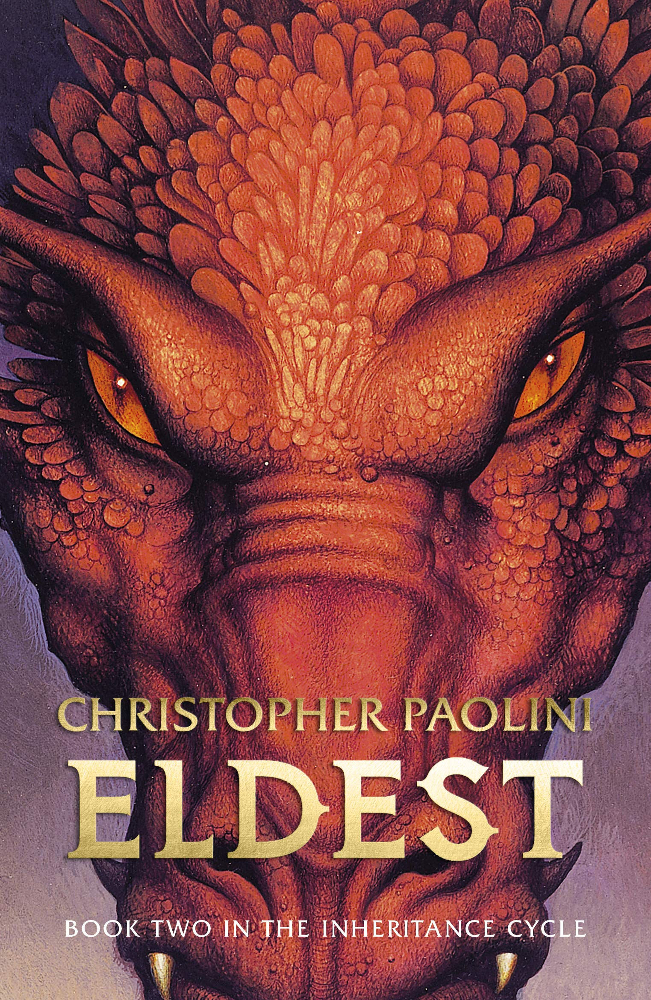
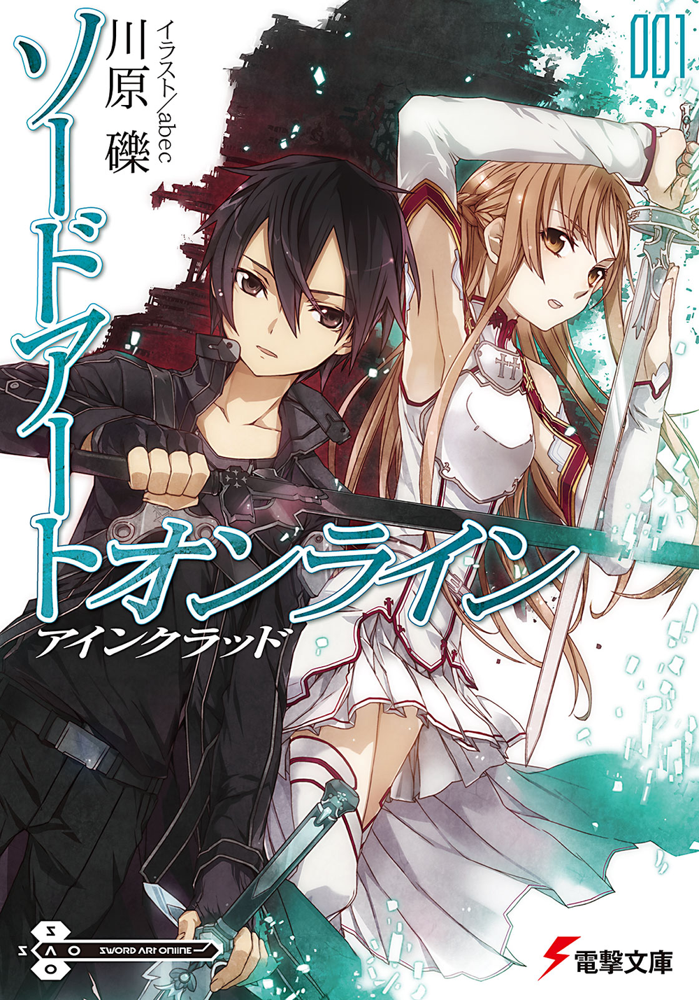
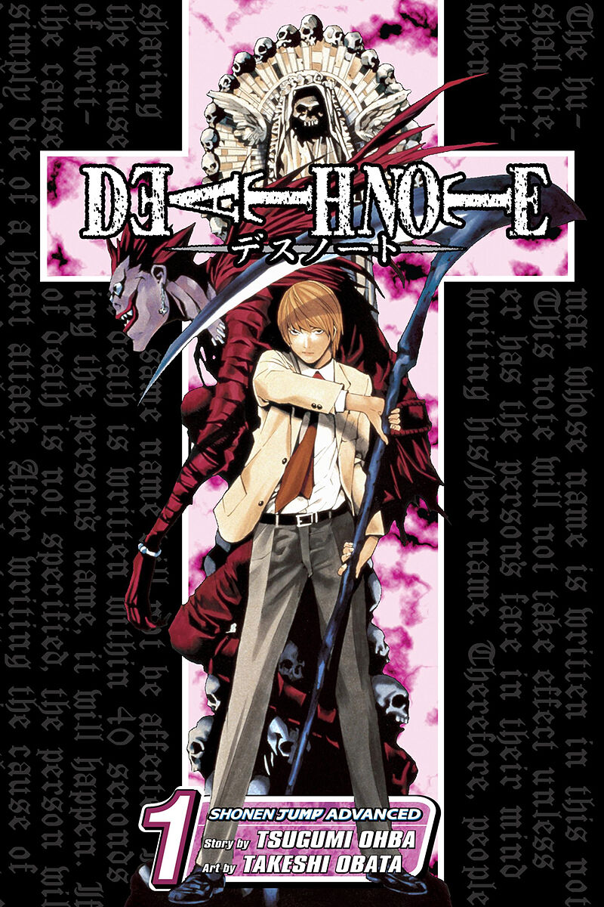

Some of my favourite things
Just some of my favorite songs:
- Run - 방탄소년단 (BTS for those who can't read Hangul)
 - First Love - 방탄소년단 (again by BTS)

- Birds - Imagine Dragons
Yes, I listen to a lot of Korean music. Shush.
Click here to listen to my favorite songs in this list.
Some of my favourite K-dramas:
- 조선로코-녹두전 (The Tale of Nokdu)
- 후아유: 학교 2015 (Who Are you: School 2015)
 - 화랑 (Hwarang)
Spot the common feature other than they are in Korean.
Click here to watch the trailers of the dramas in this list.
Some of my favourite books:
- Eldest by Christopher Paolini (the second book in the Eragon series because the first one is rubbish).

I'm currently reading the third book - Sword Art Online light novel series by Reki Kawahara.

Even though I haven't bought and read all of them yet, that counts, right? - Death Note manga series by Tsugumi Ohba and Takeshi Obata.

Again, I've not read all of them
It's manga. It's still a book, right?